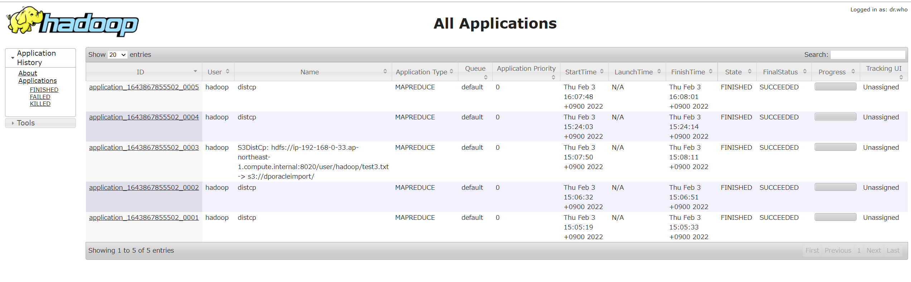

EMR
EMRHDFS上のファイルをS3にアップロードする時には下記の大きく２つの手段がある。この２つをざっくりコマンド叩いてみる。
- hadoop fs -cp：HDFS上のファイル操作。S3に対してはマルチアップロードとなる模様。
- hadoop distcp/s3-dist-cp：MapReduceを使用した分散処理。なお、s3-dist-cpはS3に特化して機能面が多い。
事前準備
テスト用ファイルの作成（1GBのファイル）
head -c 1000m /dev/urandom > test1.txt
head -c 1000m /dev/urandom > test2.txt
head -c 1000m /dev/urandom > test3.txt
hadoop fs -rm /user/hadoop/test*.txt
hadoop fs -put test1.txt /user/hadoop/
hadoop fs -put test2.txt /user/hadoop/
hadoop fs -put test3.txt /user/hadoop/
hadoop fs -ls /user/hadoop/
HDFS上のファイル確認
[hadoop@ip-192-168-0-33 ~]$ hadoop fs -ls /user/hadoop/
SLF4J: Class path contains multiple SLF4J bindings.
SLF4J: Found binding in [jar:file:/usr/lib/hadoop/lib/slf4j-log4j12-1.7.25.jar!/org/slf4j/impl/StaticLoggerBinder.class]
SLF4J: Found binding in [jar:file:/usr/share/aws/emr/emrfs/lib/slf4j-log4j12-1.7.12.jar!/org/slf4j/impl/StaticLoggerBinder.class]
SLF4J: See http://www.slf4j.org/codes.html#multiple_bindings for an explanation.
SLF4J: Actual binding is of type [org.slf4j.impl.Log4jLoggerFactory]
Found 3 items
-rw-r--r-- 1 hadoop hdfsadmingroup 1048576000 2022-02-03 07:05 /user/hadoop/test1.txt
-rw-r--r-- 1 hadoop hdfsadmingroup 1048576000 2022-02-03 07:05 /user/hadoop/test2.txt
-rw-r--r-- 1 hadoop hdfsadmingroup 1048576000 2022-02-03 07:05 /user/hadoop/test3.txt
hadoop fs -cp
[hadoop@ip-192-168-0-33 ~]$ hadoop fs -cp -f /user/hadoop/test1.txt s3://<S3バケット>/
SLF4J: Class path contains multiple SLF4J bindings.
SLF4J: Found binding in [jar:file:/usr/lib/hadoop/lib/slf4j-log4j12-1.7.25.jar!/org/slf4j/impl/StaticLoggerBinder.class]
SLF4J: Found binding in [jar:file:/usr/share/aws/emr/emrfs/lib/slf4j-log4j12-1.7.12.jar!/org/slf4j/impl/StaticLoggerBinder.class]
SLF4J: See http://www.slf4j.org/codes.html#multiple_bindings for an explanation.
SLF4J: Actual binding is of type [org.slf4j.impl.Log4jLoggerFactory]
22/02/03 07:06:12 INFO s3n.MultipartUploadOutputStream: uploadPart: partNum 1 of 's3://<S3バケット>/test1.txt' from local file '/mnt1/s3/emrfs-5827993998494060058/0000000000', 134217728 bytes in 1498 ms, md5: uq4Pfvy+zC+aWVf01fhRtQ== md5hex: baae0f7efcbecc2f9a5957f4d5f851b5
22/02/03 07:06:12 INFO s3n.MultipartUploadOutputStream: uploadPart: partNum 2 of 's3://<S3バケット>/test1.txt' from local file '/mnt/s3/emrfs-9215835204334260739/0000000001', 134217728 bytes in 1321 ms, md5: GGb7qT4wl52ltofQ0SSMnQ== md5hex: 1866fba93e30979da5b687d0d1248c9d
22/02/03 07:06:13 INFO s3n.MultipartUploadOutputStream: uploadPart: partNum 3 of 's3://<S3バケット>/test1.txt' from local file '/mnt1/s3/emrfs-5827993998494060058/0000000002', 134217728 bytes in 1200 ms, md5: FAVMVJoyETUk9XHXYSTUew== md5hex: 14054c549a32113524f571d76124d47b
22/02/03 07:06:13 INFO s3n.MultipartUploadOutputStream: uploadPart: partNum 4 of 's3://<S3バケット>/test1.txt' from local file '/mnt/s3/emrfs-9215835204334260739/0000000003', 134217728 bytes in 1009 ms, md5: AVAEWiZHnQB7l8QhiwWhIg== md5hex: 0150045a26479d007b97c4218b05a122
22/02/03 07:06:14 INFO s3n.MultipartUploadOutputStream: uploadPart: partNum 5 of 's3://<S3バケット>/test1.txt' from local file '/mnt1/s3/emrfs-5827993998494060058/0000000004', 134217728 bytes in 1074 ms, md5: d4erSVSapJ8tfT/KPMm0ag== md5hex: 7787ab49549aa49f2d7d3fca3cc9b46a
22/02/03 07:06:15 INFO s3n.MultipartUploadOutputStream: uploadPart: partNum 6 of 's3://<S3バケット>/test1.txt' from local file '/mnt/s3/emrfs-9215835204334260739/0000000005', 134217728 bytes in 1079 ms, md5: mQElzOq2L+D6NgaM5io9wg== md5hex: 990125cceab62fe0fa36068ce62a3dc2
22/02/03 07:06:15 INFO s3n.MultipartUploadOutputStream: close closed:false s3://<S3バケット>/test1.txt
22/02/03 07:06:15 INFO s3n.MultipartUploadOutputStream: uploadPart: partNum 7 of 's3://<S3バケット>/test1.txt' from local file '/mnt1/s3/emrfs-5827993998494060058/0000000006', 134217728 bytes in 985 ms, md5: NpCzzQUQia4lZlXx4TtBxA== md5hex: 3690b3cd051089ae256655f1e13b41c4
22/02/03 07:06:16 INFO s3n.MultipartUploadOutputStream: uploadPart: partNum 8 of 's3://<S3バケット>/test1.txt' from local file '/mnt/s3/emrfs-9215835204334260739/0000000007', 109051904 bytes in 850 ms, md5: 4yBV8LAdE5MVZcTAjvl+/w== md5hex: e32055f0b01d13931565c4c08ef97eff
22/02/03 07:06:16 INFO dispatch.DefaultMultipartUploadDispatcher: Completed multipart upload of 8 parts 1048576000 bytes
22/02/03 07:06:16 INFO s3n.MultipartUploadOutputStream: close closed:true s3://<S3バケット>/test1.txt
hadoop distcp
[hadoop@ip-192-168-0-33 ~]$ time hadoop distcp /user/hadoop/test2.txt s3://<S3バケット>/
SLF4J: Class path contains multiple SLF4J bindings.
SLF4J: Found binding in [jar:file:/usr/lib/hadoop/lib/slf4j-log4j12-1.7.25.jar!/org/slf4j/impl/StaticLoggerBinder.class]
SLF4J: Found binding in [jar:file:/usr/share/aws/emr/emrfs/lib/slf4j-log4j12-1.7.12.jar!/org/slf4j/impl/StaticLoggerBinder.class]
SLF4J: See http://www.slf4j.org/codes.html#multiple_bindings for an explanation.
SLF4J: Actual binding is of type [org.slf4j.impl.Log4jLoggerFactory]
22/02/03 07:07:45 INFO tools.OptionsParser: parseChunkSize: blocksperchunk false
22/02/03 07:07:47 INFO tools.DistCp: Input Options: DistCpOptions{atomicCommit=false, syncFolder=false, deleteMissing=false, ignoreFailures=false, overwrite=false, append=false, useDiff=false, useRdiff=false, fromSnapshot=null, toSnapshot=null, skipCRC=false, blocking=true, numListstatusThreads=0, maxMaps=20, mapBandwidth=100, sslConfigurationFile='null', copyStrategy='uniformsize', preserveStatus=[], preserveRawXattrs=false, atomicWorkPath=null, logPath=null, sourceFileListing=null, sourcePaths=[/user/hadoop/test2.txt], targetPath=s3://<S3バケット>/, targetPathExists=true, filtersFile='null', blocksPerChunk=0, copyBufferSize=8192, verboseLog=false}
22/02/03 07:07:47 INFO client.RMProxy: Connecting to ResourceManager at ip-192-168-0-33.ap-northeast-1.compute.internal/192.168.0.33:8032
22/02/03 07:07:47 INFO client.AHSProxy: Connecting to Application History server at ip-192-168-0-33.ap-northeast-1.compute.internal/192.168.0.33:10200
22/02/03 07:07:48 INFO tools.SimpleCopyListing: Paths (files+dirs) cnt = 1; dirCnt = 0
22/02/03 07:07:48 INFO tools.SimpleCopyListing: Build file listing completed.
22/02/03 07:07:48 INFO Configuration.deprecation: io.sort.mb is deprecated. Instead, use mapreduce.task.io.sort.mb
22/02/03 07:07:48 INFO Configuration.deprecation: io.sort.factor is deprecated. Instead, use mapreduce.task.io.sort.factor
22/02/03 07:07:48 INFO tools.DistCp: Number of paths in the copy list: 1
22/02/03 07:07:48 INFO tools.DistCp: Number of paths in the copy list: 1
22/02/03 07:07:48 INFO client.RMProxy: Connecting to ResourceManager at ip-192-168-0-33.ap-northeast-1.compute.internal/192.168.0.33:8032
22/02/03 07:07:48 INFO client.AHSProxy: Connecting to Application History server at ip-192-168-0-33.ap-northeast-1.compute.internal/192.168.0.33:10200
22/02/03 07:07:48 INFO mapreduce.JobSubmitter: number of splits:1
22/02/03 07:07:48 INFO mapreduce.JobSubmitter: Submitting tokens for job: job_1643867855502_0005
22/02/03 07:07:48 INFO conf.Configuration: resource-types.xml not found
22/02/03 07:07:48 INFO resource.ResourceUtils: Unable to find 'resource-types.xml'.
22/02/03 07:07:48 INFO resource.ResourceUtils: Adding resource type - name = memory-mb, units = Mi, type = COUNTABLE
22/02/03 07:07:48 INFO resource.ResourceUtils: Adding resource type - name = vcores, units = , type = COUNTABLE
22/02/03 07:07:48 INFO impl.YarnClientImpl: Submitted application application_1643867855502_0005
22/02/03 07:07:48 INFO mapreduce.Job: The url to track the job: http://ip-192-168-0-33.ap-northeast-1.compute.internal:20888/proxy/application_1643867855502_0005/
22/02/03 07:07:48 INFO tools.DistCp: DistCp job-id: job_1643867855502_0005
22/02/03 07:07:48 INFO mapreduce.Job: Running job: job_1643867855502_0005
22/02/03 07:07:53 INFO mapreduce.Job: Job job_1643867855502_0005 running in uber mode : false
22/02/03 07:07:53 INFO mapreduce.Job: map 0% reduce 0%
22/02/03 07:08:00 INFO mapreduce.Job: map 100% reduce 0%
22/02/03 07:08:03 INFO mapreduce.Job: Job job_1643867855502_0005 completed successfully
22/02/03 07:08:03 INFO mapreduce.Job: Counters: 37
File System Counters
FILE: Number of bytes read=0
FILE: Number of bytes written=224682
FILE: Number of read operations=0
FILE: Number of large read operations=0
FILE: Number of write operations=0
HDFS: Number of bytes read=436
HDFS: Number of bytes written=88
HDFS: Number of read operations=7
HDFS: Number of large read operations=0
HDFS: Number of write operations=2
S3: Number of bytes read=0
S3: Number of bytes written=0
S3: Number of read operations=0
S3: Number of large read operations=0
S3: Number of write operations=0
Job Counters
Launched map tasks=1
Other local map tasks=1
Total time spent by all maps in occupied slots (ms)=149216
Total time spent by all reduces in occupied slots (ms)=0
Total time spent by all map tasks (ms)=4663
Total vcore-milliseconds taken by all map tasks=4663
Total megabyte-milliseconds taken by all map tasks=4774912
Map-Reduce Framework
Map input records=1
Map output records=1
Input split bytes=137
Spilled Records=0
Failed Shuffles=0
Merged Map outputs=0
GC time elapsed (ms)=158
CPU time spent (ms)=4830
Physical memory (bytes) snapshot=522174464
Virtual memory (bytes) snapshot=4658302976
Total committed heap usage (bytes)=494927872
File Input Format Counters
Bytes Read=299
File Output Format Counters
Bytes Written=88
DistCp Counters
Bytes Skipped=1048576000
Files Skipped=1
real 0m18.727s
user 0m9.132s
sys 0m0.356s
[hadoop@ip-192-168-0-33 ~]$
s3-dist-cp
[hadoop@ip-192-168-0-33 ~]$ time s3-dist-cp --src /user/hadoop/test3.txt --dest s3://<S3バケット>/
SLF4J: Class path contains multiple SLF4J bindings.
SLF4J: Found binding in [jar:file:/usr/lib/hadoop/lib/slf4j-log4j12-1.7.25.jar!/org/slf4j/impl/StaticLoggerBinder.class]
SLF4J: Found binding in [jar:file:/usr/share/aws/emr/emrfs/lib/slf4j-log4j12-1.7.12.jar!/org/slf4j/impl/StaticLoggerBinder.class]
SLF4J: See http://www.slf4j.org/codes.html#multiple_bindings for an explanation.
SLF4J: Actual binding is of type [org.slf4j.impl.Log4jLoggerFactory]
22/02/03 07:08:42 INFO s3distcp.Main: Running with args: -libjars /usr/share/aws/emr/s3-dist-cp/lib/aopalliance-1.0.jar,/usr/share/aws/emr/s3-dist-cp/lib/guava-18.0.jar,/usr/share/aws/emr/s3-dist-cp/lib/guice-4.1.0.jar,/usr/share/aws/emr/s3-dist-cp/lib/guice-servlet-4.2.3.jar,/usr/share/aws/emr/s3-dist-cp/lib/javax.inject-1.jar,/usr/share/aws/emr/s3-dist-cp/lib/s3-dist-cp-2.18.0.jar,/usr/share/aws/emr/s3-dist-cp/lib/s3-dist-cp.jar --src /user/hadoop/test3.txt --dest s3://<S3バケット>/
22/02/03 07:08:42 INFO s3distcp.S3DistCp: S3DistCp args: --src /user/hadoop/test3.txt --dest s3://<S3バケット>/
22/02/03 07:08:42 INFO s3distcp.S3DistCp: Using output path 'hdfs:/tmp/883b2614-c0d0-47e2-b74b-f9ec51aeed17/output'
22/02/03 07:08:42 INFO s3distcp.S3DistCp: Try to recursively delete with throw Exceptionhdfs:/tmp/883b2614-c0d0-47e2-b74b-f9ec51aeed17/files
22/02/03 07:08:42 INFO s3distcp.S3DistCp: Try to recursively delete with throw Exceptionhdfs:/tmp/883b2614-c0d0-47e2-b74b-f9ec51aeed17/output
22/02/03 07:08:42 INFO s3distcp.S3ClientFactory: Create Amazon S3 client with endpoint override
22/02/03 07:08:43 INFO s3distcp.S3ClientFactory: DefaultAWSCredentialsProviderChain is used to create AmazonS3Client.
22/02/03 07:08:43 INFO s3distcp.FileInfoListing: Opening new file: hdfs:/tmp/883b2614-c0d0-47e2-b74b-f9ec51aeed17/files/1
22/02/03 07:08:43 INFO s3distcp.S3DistCp: Created 1 files to copy 1 files
22/02/03 07:08:45 INFO s3distcp.S3DistCp: Reducer number: 3
22/02/03 07:08:45 INFO client.RMProxy: Connecting to ResourceManager at ip-192-168-0-33.ap-northeast-1.compute.internal/192.168.0.33:8032
22/02/03 07:08:45 INFO client.AHSProxy: Connecting to Application History server at ip-192-168-0-33.ap-northeast-1.compute.internal/192.168.0.33:10200
22/02/03 07:08:46 INFO input.FileInputFormat: Total input files to process : 1
22/02/03 07:08:46 INFO mapreduce.JobSubmitter: number of splits:1
22/02/03 07:08:46 INFO mapreduce.JobSubmitter: Submitting tokens for job: job_1643867855502_0006
22/02/03 07:08:46 INFO conf.Configuration: resource-types.xml not found
22/02/03 07:08:46 INFO resource.ResourceUtils: Unable to find 'resource-types.xml'.
22/02/03 07:08:46 INFO resource.ResourceUtils: Adding resource type - name = memory-mb, units = Mi, type = COUNTABLE
22/02/03 07:08:46 INFO resource.ResourceUtils: Adding resource type - name = vcores, units = , type = COUNTABLE
22/02/03 07:08:46 INFO impl.YarnClientImpl: Submitted application application_1643867855502_0006
22/02/03 07:08:47 INFO mapreduce.Job: The url to track the job: http://ip-192-168-0-33.ap-northeast-1.compute.internal:20888/proxy/application_1643867855502_0006/
22/02/03 07:08:47 INFO mapreduce.Job: Running job: job_1643867855502_0006
22/02/03 07:08:52 INFO mapreduce.Job: Job job_1643867855502_0006 running in uber mode : false
22/02/03 07:08:52 INFO mapreduce.Job: map 0% reduce 0%
22/02/03 07:08:57 INFO mapreduce.Job: map 100% reduce 0%
22/02/03 07:09:02 INFO mapreduce.Job: map 100% reduce 33%
22/02/03 07:09:03 INFO mapreduce.Job: map 100% reduce 67%
22/02/03 07:09:12 INFO mapreduce.Job: map 100% reduce 100%
22/02/03 07:09:12 INFO mapreduce.Job: Job job_1643867855502_0006 completed successfully
22/02/03 07:09:12 INFO mapreduce.Job: Counters: 54
File System Counters
FILE: Number of bytes read=185
FILE: Number of bytes written=901493
FILE: Number of read operations=0
FILE: Number of large read operations=0
FILE: Number of write operations=0
HDFS: Number of bytes read=1048576423
HDFS: Number of bytes written=0
HDFS: Number of read operations=14
HDFS: Number of large read operations=0
HDFS: Number of write operations=6
S3: Number of bytes read=0
S3: Number of bytes written=1048576000
S3: Number of read operations=0
S3: Number of large read operations=0
S3: Number of write operations=0
Job Counters
Launched map tasks=1
Launched reduce tasks=3
Data-local map tasks=1
Total time spent by all maps in occupied slots (ms)=244704
Total time spent by all reduces in occupied slots (ms)=3567168
Total time spent by all map tasks (ms)=2549
Total time spent by all reduce tasks (ms)=18579
Total vcore-milliseconds taken by all map tasks=2549
Total vcore-milliseconds taken by all reduce tasks=18579
Total megabyte-milliseconds taken by all map tasks=7830528
Total megabyte-milliseconds taken by all reduce tasks=114149376
Map-Reduce Framework
Map input records=1
Map output records=1
Map output bytes=151
Map output materialized bytes=173
Input split bytes=173
Combine input records=0
Combine output records=0
Reduce input groups=1
Reduce shuffle bytes=173
Reduce input records=1
Reduce output records=0
Spilled Records=2
Shuffled Maps =3
Failed Shuffles=0
Merged Map outputs=3
GC time elapsed (ms)=579
CPU time spent (ms)=19600
Physical memory (bytes) snapshot=1606885376
Virtual memory (bytes) snapshot=26631655424
Total committed heap usage (bytes)=1451229184
Shuffle Errors
BAD_ID=0
CONNECTION=0
IO_ERROR=0
WRONG_LENGTH=0
WRONG_MAP=0
WRONG_REDUCE=0
File Input Format Counters
Bytes Read=250
File Output Format Counters
Bytes Written=0
22/02/03 07:09:12 INFO s3distcp.S3DistCp: Try to recursively delete without throw Exceptionhdfs:/tmp/883b2614-c0d0-47e2-b74b-f9ec51aeed17
real 0m31.031s
user 0m11.129s
sys 0m0.432s
[hadoop@ip-192-168-0-33 ~]$
s3-dist-cpやhadoop distcpはMapReduceを使用した分散処理のため、アプリケーション履歴として確認出来る。yarn上でメモリ確保して動くのでジョブ数については注意が必要。
